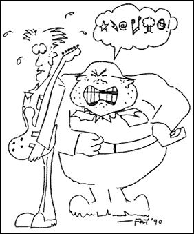

|
Lunch With The Fat Man | 1, 2, 3
"Song, Arrangement, Recording: Knowing The Difference"
Good morning soldiers. Stand up straight. Did I say something funny, private? Welcome to basic training with The Fat Man.
Your Song:
Your song is your best friend. Keep your song clean, and know it inside out. A song is a melody, chords, and lyrics, or some combination of the three, but nothing more. A good song comes across no matter who sings it, and no matter what instruments it's played on. I will now demonstrate a good song by singing Deep Purple's My Woman From Tokyo on the autoharp.
Some songs, even though they are hits, are lousy songs. They survive because they have good arrangements or good recordings. You cannot afford to take that chance. All right. Kowalski, you think this is some kind of joke? Here. You take this autoharp and sing me Smoke On The Water. NOW, Kowalski!
 Right, that's enough. Now, that's the poorest excuse for a wimpy little song that I ever heard. And every one of you thought that Smoke On The Water was a pretty good song, didn't you? But without the riff and the high notes, it stunk like the food in the mess hall, didn't it? Why did I sound so good on My Woman From Tokyo while Kowalski here fell right on his butt with a song by the very same group? I'll tell you why, even though any deaf disco dancer could, tell you.
My song has something like an ABAC DEDF form. His is more like AAAA BCBC. That's sissy stuff.
My song has chordal interest, and different key centers between the verses and the chorus. This gives motivation and direction. His has a drone on G.
My song has a mysterious bridge section. His has a diddley-waddley guitar solo.
My song has badass lyrics about intriguing human relationships. His reads Iike a damn school newspaper.
Let that be a lesson to you. You may get to thinking you're pretty tough, but that's when even the best songwriters screw up.
Your Arrangement:
An arrangement is the specific manner in which the song is performed.
This includes instrumentation, tempo, rhythm, intro, ending, and seal horn sound effects. What are you laughing at, skinny boy? Someday you may be out strolling in the jungle and find yourself in the middle of an A&R picnic. And what happens? You reach for your song, and find you've got nothing but a jam.
Take THlS!
I have just demonstrated the value of using the element of surprise in arrangements. Private Jones here was lulled into a false sense of security by my predictable intro, and I won his respect by suddenly dropping a seven beat bar on him. Get up, Jones.
Surprise. Power. A persistent, relentless groove. These are the elements of arrangement. But they are only as good as a part of an overall plan. The arrangement MUST support the lyrics, chords, and melody. Otherwise, we find that we are fighting ourselves.
Nobody's going to go out there and win the contract without teamwork. A bold song requires bold arrangement. A quiet song requires quiet arrangement. A cruddy song requires miraculous arrangement, so don't go making things hard on yourselves by writing sloppy drivel, unless you've got a Smoke on the Water riff up your sleeve.
So everybody repeat after me.
"This is my song and this is my groove. One tells a story and one makes me move."
Your Recording:
The recording is a captured performance of a specific song with a specific arrangement, not necessarily accomplished in real time. In other words, it's the real thing - the end result of the song, arrangement, and practice. The final product that will make or break you to the record companies, your fans, your spouses, children, and American History.
Oh, yeah, I can see it in your faces... you're all set to jump into combat. You all think you're ready for the big time right now. I can just hear your little voices squeaking, "Lemmie at 'em, Sarge! Put me in that isolation booth - I'll teach them how to record."
What's that, Van Halen? Well, you drop right now and give me a Top 20.
And while you're at it, you just stop and think for a minute, soldier. You can make it on a grooving arrangement alone, but you'll be damn lucky. You can make it on a song alone, but that's like jumping without a backup 'chute. So you just check and double check and triple check that you have the best song and the best arrangement you know how to write, 'cause once it's on tape there ain't no excuses. And once we get to the studio, well, just leave the recording to me and the engineer.
Well, the music business may be a popularity contest, but producing's not. I didn't come here to be your friend. And I know that by this time, some of you hate my guts. I don't care if you like me or what I have to say. But, by God, if you've learned what I've taught you, you may just survive out there - and that's what's important to me.
You're an ugly bunch of bastards. Let's go give 'em Hell.
Next page | "The 24 Levels of Rejection"
1, 2, 3
|